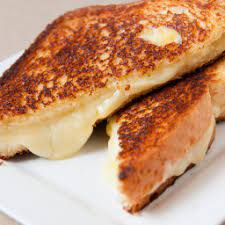

Grilled Cheese Recipe

Ingredients
- 2 slices white bread
- 2-3 slices cheese, such as gouda
- 15g Butter
Method
- Place a pan on medium-low heat, and melt the butter into the pan. Optionally, add some salt.
- Place both slices of bread into the pan and mop the butter up
- Place the cheese onto the bread, spreading it out evenly
- Cover the pan and sllow the cheese to melt a litte
- Take off the lid, and close the sandwich. Continue to cook, flipping occasionally, until the cheese is melted all the way and starting to ooze out of the sides.
- Remove the sandwich from the pan, cut into triabgles, and serve.
Back to main page